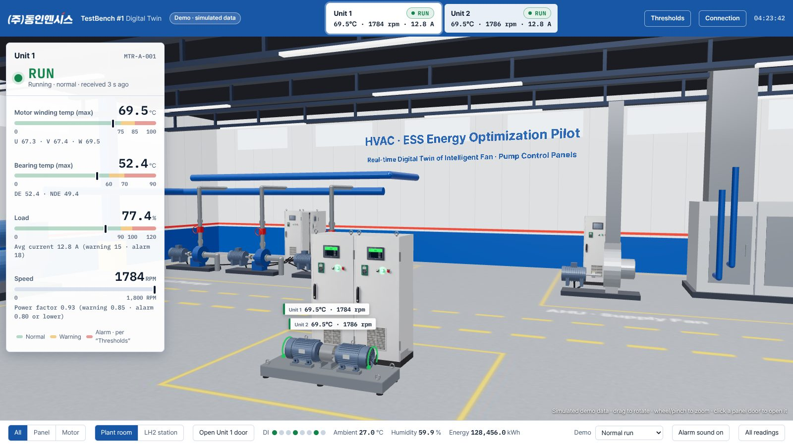

AI decides, the PLC acts. We connect the two.
DONG-IN ENSIS collects motor temperature, current and vibration data 24/7 from the Intelligent Control Panel that controls the equipment. Threshold alarms and the digital twin dashboard are available today, while industrial AI anomaly detection that learns normal operating patterns, edge AI and energy-saving control are in pilot (PoC).

AI predictive maintenance starts with good data. The Intelligent Control Panel records these items 24/7, and in the pilot a high-precision data acquisition (DAQ) unit also captures electrical waveforms at kHz rates for analysis.

Operating data recorded 24/7 by the Intelligent Control Panel
Warnings and alarms on the dashboard
Unsupervised learning finds departures from normal
Trained results sent to site controllers for instant decisions
Optimized setpoints back to the PLC, aiming for 5%+ power saving

| Date | Media | Topic |
|---|---|---|
| 2026.04.17 | IT Biz News | Opening the manufacturing AX era with industrial AI – field trial of a 5% energy-saving solution |
| 2026.04.13 | Daily Economy | On-site autonomous control with unsupervised-learning edge AI |
Full press releases are linked below and in the news list. Pilot results will be published once verified.
We design and build the panels that house the sensors, PLCs and drives, so the data AI needs is collected properly from the start. "750+" refers to control system projects delivered, not AI training data.
An AI that only reports does not change how equipment runs. Because we build the panel and write the PLC program ourselves, we link AI-optimized setpoints back to the PLC and into equipment operation (in pilot). Interlocks and final control stay with the site PLC; the server never controls equipment directly.
We are piloting our patented modular draw-out VFD panel with AI predictive maintenance, so that when a fault sign appears only the affected module is replaced without stopping the whole system.
Equipment data collection, threshold alarms and the dashboard work from day one. AI anomaly detection that learns from normal operating data is being advanced at the pilot (PoC) stage and is not presented as a finished commercial feature. If your site is interested in the pilot, contact us and we will review it together.
The AI in pilot uses unsupervised learning: it learns normal operating patterns by itself, without people labeling failure data, and finds anomalies. That is why we are validating it for new sites and special equipment with little data.
Heavy AI training runs in the cloud, and only the trained parameters are sent to the edge controller on site, so decisions can be made on site even if the network drops. We are evaluating controllers such as ABB AC500 and Phoenix Contact AXC F 2152 as edge devices.
The pilot aims to cut the power use of industrial motor systems by 5% or more through closed-loop control that sends AI-optimized setpoints back to the site PLC. This is a target, not a confirmed figure; verified pilot results will be published.
Motor winding temperature (U·V·W), bearing temperature, speed, voltage, current and energy, vibration, ambient temperature and humidity, and run-status signals, recorded 24/7. In the pilot, a high-precision DAQ unit also captures electrical waveforms at kHz rates.
Even when AI finds an anomaly or a better setpoint, equipment only changes when a PLC program receives that value and controls with it. We build the panel and write the PLC program ourselves, so one company connects data collection through to the PLC control link. Sending AI setpoints back to the PLC is currently in pilot.
Interlocks and final control authority stay with the site PLC, and the server never controls equipment directly. Communication between the site and the cloud or your server is encrypted with TLS.
The digital twin demo on our website shows the Intelligent Control Panel TestBench (two panel sections, two motors) in 3D. Motor temperature, speed and current are judged as normal, warning or alarm, running on simulated demo data.
Yes. DONG-IN ENSIS handles the on-site equipment link (OT) and provides operating data through a standard data structure and REST API. It can also be applied together with AI analytics partners.
Tell us about your equipment and how you manage it today, and an engineer will review how to start from data collection and get back to you.